Usage
Creating Clines
The Cline class implements the general equation:
where \(c\) and \(d\) are real numbers and \(\alpha\) is a complex number.
Creating a Cline from Equation Parameters
The most direct way to create a cline is by specifying its equation parameters:
from cline import Cline
# Create a cline using equation parameters
# c=1, alpha=-3-4j, d=16 represents a circle with center 3+4j and radius 5
cline = Cline(c=1.0, alpha=-3-4j, d=16)
print(cline)
import matplotlib.pyplot as plt
from cline import Cline
# Create a cline using equation parameters
# c=1, alpha=-3-4j, d=16 represents a circle with center 3+4j and radius 5
cline = Cline(c=1.0, alpha=-3-4j, d=16)
# Create plot - the .plot() method now calculates appropriate limits automatically
fig, ax = plt.subplots(figsize=(8, 8))
cline.plot(ax=ax, color='blue', label='Circle from Parameters')
plt.legend()
plt.title('Circle Created from Equation Parameters')
(Source code, png, hires.png, pdf)
{kind=link}
{kind=link}
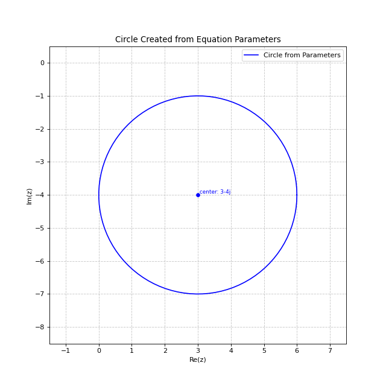
Creating a Circle
You can create a circle by specifying its center and radius:
from cline import Cline
# Create a circle with center at 1+2j and radius 3
circle = Cline.from_circle(center=1+2j, radius=3)
print(circle)
import matplotlib.pyplot as plt
from cline import Cline
# Create a circle with center at 1+2j and radius 3
circle = Cline.from_circle(center=1+2j, radius=3)
# Create plot with automatic limits based on circle center and radius
fig, ax = plt.subplots(figsize=(8, 8))
circle.plot(ax=ax, color='green', label='Circle')
plt.legend()
plt.title('Circle with Center at 1+2j and Radius 3')
(Source code, png, hires.png, pdf)
{kind=link}
{kind=link}
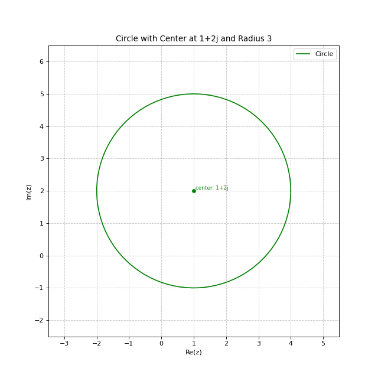
Creating a Line
You can create a line by specifying two points:
# Create a line passing through the points 0 and 1+1j
line = Cline.from_line(z0=0, z1=1+1j)
print(line)
import matplotlib.pyplot as plt
from cline import Cline
# Create a line passing through points 0 and 1+1j
line = Cline.from_line(z0=0, z1=1+1j)
# Create plot - the limits are now automatically calculated
# based on the points used to create the line
fig, ax = plt.subplots(figsize=(8, 8))
line.plot(ax=ax, color='red', label='Line', show_points=True)
plt.legend()
plt.title('Line Through Points 0 and 1+1j')
(Source code, png, hires.png, pdf)
{kind=link}
{kind=link}
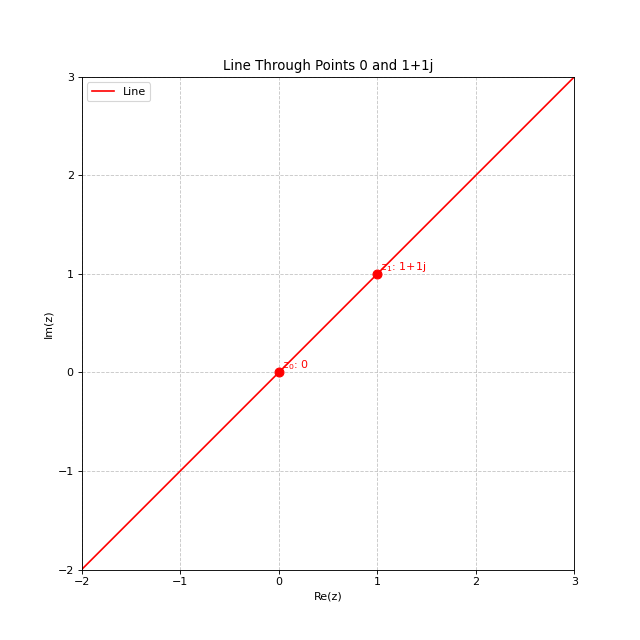
Creating a Cline from Three Points
The most general method creates a cline passing through three points:
# Create a cline passing through three points
cline = Cline.from_three_points(z0=0, z1=1, z2=1j)
print(cline)
import matplotlib.pyplot as plt
from cline import Cline
# Create three points in the complex plane
z0 = 0
z1 = 1
z2 = 1j
# Create a cline passing through these three points
cline = Cline.from_three_points(z0, z1, z2)
# Create plot with automatic limits
fig, ax = plt.subplots(figsize=(8, 8))
cline.plot(ax=ax, color='purple', label='Circle through 3 points', show_points=True)
plt.legend()
plt.title('Circle Through Three Points')
(Source code, png, hires.png, pdf)
{kind=link}
{kind=link}
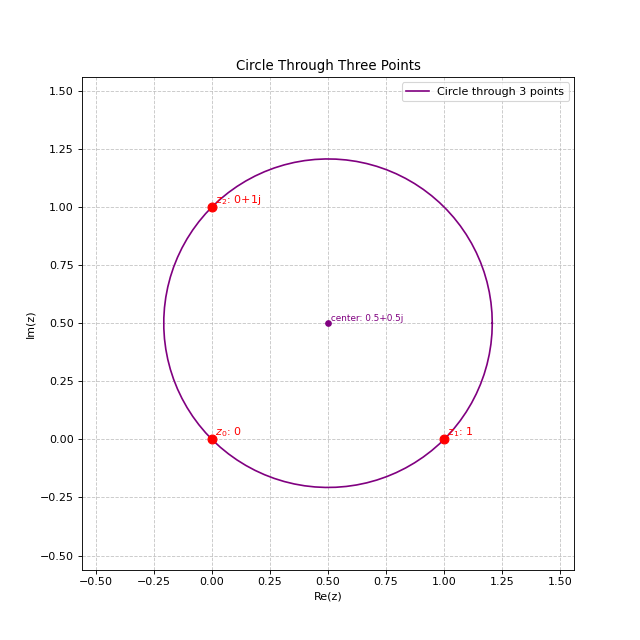
This will create a circle if the points are not collinear, or a line if they are collinear.
Example: Three Collinear Points
When the three points lie on a straight line, the result is a line:
# Create three collinear points (all lie on the line y = 2x)
z0 = 1 + 2j # (1,2)
z1 = 2 + 4j # (2,4)
z2 = 3 + 6j # (3,6)
# Create a cline passing through these three points
cline = Cline.from_three_points(z0, z1, z2)
# This will be a line, not a circle
print(f"Is circle: {cline.is_circle}") # False
print(f"Is line: {cline.is_line}") # True
import matplotlib.pyplot as plt
from cline import Cline
# Create three collinear points (these all lie on the line y = 2x)
z0 = 1 + 2j # (1,2)
z1 = 2 + 4j # (2,4)
z2 = 3 + 6j # (3,6)
# Create a cline passing through these three points
# Because the points are collinear, this will create a line
cline = Cline.from_three_points(z0, z1, z2)
# Create plot with automatic limits
fig, ax = plt.subplots(figsize=(8, 8))
cline.plot(ax=ax, color='orange', label='Line through 3 collinear points', show_points=True)
# Add a grid to visualize the collinearity
ax.grid(True, linestyle='-', alpha=0.3)
plt.legend()
plt.title('Line Through Three Collinear Points')
(Source code, png, hires.png, pdf)
{kind=link}
{kind=link}
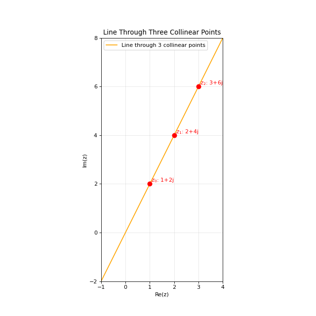
Accessing Properties
Depending on whether your cline is a circle or a line, different properties are available:
For Circles
circle = Cline.from_circle(center=1+2j, radius=3)
# Access circle properties
print(f"Center: {circle.center}")
print(f"Radius: {circle.radius}")
For Lines
line = Cline.from_line(z0=0, z1=1+1j)
# Access line properties
print(f"Normal vector: {line.normal_vector}")
print(f"Direction vector: {line.direction_vector}")
print(f"Distance from origin: {line.distance_from_origin}")
print(f"Point on line: {line.point_on_line}")
Visualization
Clines can be easily visualized using the built-in plotting functionality:
import matplotlib.pyplot as plt
# Create a figure
fig, ax = plt.subplots(figsize=(8, 8))
# Plot a circle
circle = Cline.from_circle(center=1+2j, radius=3)
circle.plot(ax=ax, color='blue', label='Circle')
# Plot a line
line = Cline.from_line(z0=-3-2j, z1=3+4j)
line.plot(ax=ax, color='red', label='Line')
# No need to manually set limits - they are automatically calculated
plt.legend()
plt.title('Combined Circle and Line Plot')
plt.show()
import matplotlib.pyplot as plt
from cline import Cline
# Create a figure
fig, ax = plt.subplots(figsize=(8, 8))
# Plot a circle
circle = Cline.from_circle(center=1+2j, radius=3)
circle.plot(ax=ax, color='blue', label='Circle')
# Plot a line
line = Cline.from_line(z0=-3-2j, z1=3+4j)
line.plot(ax=ax, color='red', label='Line')
# The plot automatically adjusts to show both the circle and line
plt.legend()
plt.title('Combined Circle and Line Plot')
(Source code, png, hires.png, pdf)
{kind=link}
{kind=link}
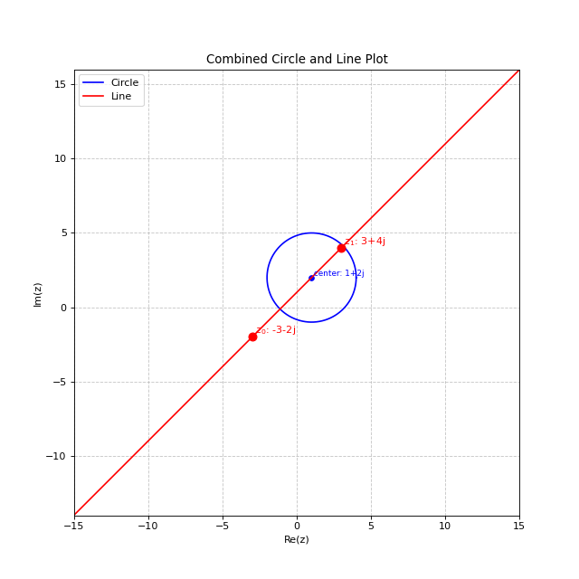
You can customize the plot appearance using various parameters:
cline.plot(
ax=ax, # Matplotlib axes to plot on
figsize=(8, 8), # Figure size if creating a new figure
xlim=None, # Override automatic x-axis limits if needed
ylim=None, # Override automatic y-axis limits if needed
color='blue', # Color of the cline
point_color='red', # Color of the points used to create the cline
label='My Cline', # Label for the legend
show_points=True, # Whether to show the points used to create the cline
num_points=100, # Number of points to use when plotting a circle
precision=4 # Number of decimal places for displayed values
)
Hermitian Matrix Representation
Every cline corresponds to a 2×2 Hermitian matrix:
A point \(z\) lies on the cline iff \(\mathbf{z}^\dagger H \mathbf{z} = 0\) where \(\mathbf{z} = (z, 1)^T\).
from cline import Cline
# Unit circle: H = [[1, 0], [0, -1]]
S = Cline.from_circle(center=0, radius=1)
print(S.hermitian_matrix)
# Round-trip: matrix → cline → matrix
C = Cline(c=1, alpha=2+1j, d=3)
H = C.hermitian_matrix
C2 = Cline.from_hermitian_matrix(H)
print(f"Center: {C2.center}, Radius: {C2.radius}")
Testing Point Membership
Use contains to test whether a point lies on a cline:
from cline import Cline
import sympy
S = Cline.from_circle(center=0, radius=1)
print(S.contains(1)) # True — on the circle
print(S.contains(0.5)) # False — inside
print(S.contains(sympy.zoo)) # False — circles don't contain ∞
L = Cline.from_line(0, 1)
print(L.contains(5.0)) # True — on the line
print(L.contains(1j)) # False — off the line
print(L.contains(sympy.zoo)) # True — lines contain ∞
Inversion and Reflection
The invert method is polymorphic: pass a point to get a point,
or pass a cline to get the image cline.
Point Inversion in a Circle
import matplotlib.pyplot as plt
import numpy as np
from cline import Cline
S = Cline.from_circle(center=0, radius=2)
theta = np.linspace(0, 2*np.pi, 100)
fig, ax = plt.subplots(figsize=(8, 8))
ax.plot(S.radius*np.cos(theta), S.radius*np.sin(theta), 'k--', alpha=0.4, label='Inversion circle (r=2)')
points = [3+1j, 1+0.5j, 4+2j, 0.5+1.5j]
for z in points:
z_inv = S.invert(z)
ax.plot(z.real, z.imag, 'bo', markersize=8)
ax.plot(z_inv.real, z_inv.imag, 'ro', markersize=8)
ax.annotate('', xy=(z_inv.real, z_inv.imag), xytext=(z.real, z.imag),
arrowprops=dict(arrowstyle='->', color='gray', alpha=0.5))
ax.plot([], [], 'bo', label='Original points')
ax.plot([], [], 'ro', label='Inverted points')
ax.set_aspect('equal')
ax.grid(True, alpha=0.3)
ax.legend()
ax.set_title('Point inversion in a circle')
(Source code, png, hires.png, pdf)
{kind=link}
{kind=link}
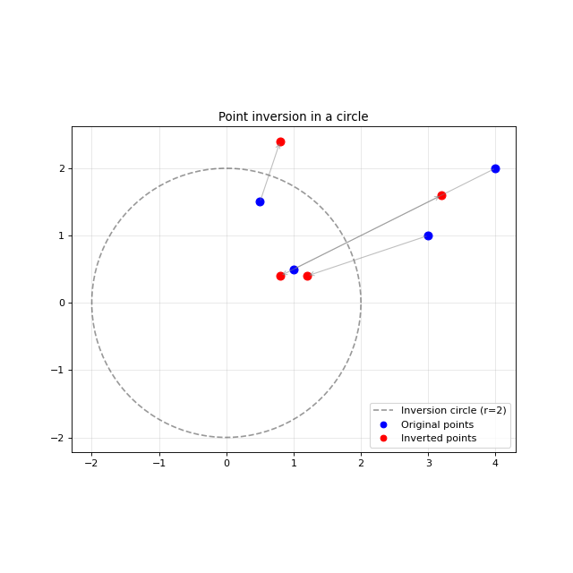
Point Reflection in a Line
import matplotlib.pyplot as plt
import numpy as np
from cline import Cline
L = Cline.from_line(0, 1+1j) # line y = x
fig, ax = plt.subplots(figsize=(8, 8))
t = np.linspace(-4, 4, 100)
ax.plot(t, t, 'k--', alpha=0.4, label='Line y = x')
points = [3+0j, 1+3j, -1+2j, 2-1j]
for z in points:
z_ref = L.invert(z)
ax.plot(z.real, z.imag, 'bo', markersize=8)
ax.plot(z_ref.real, z_ref.imag, 'ro', markersize=8)
ax.plot([z.real, z_ref.real], [z.imag, z_ref.imag], 'gray', alpha=0.4, linestyle=':')
ax.plot([], [], 'bo', label='Original points')
ax.plot([], [], 'ro', label='Reflected points')
ax.set_xlim(-3, 5)
ax.set_ylim(-3, 5)
ax.set_aspect('equal')
ax.grid(True, alpha=0.3)
ax.legend()
ax.set_title('Point reflection in a line')
(Source code, png, hires.png, pdf)
{kind=link}
{kind=link}
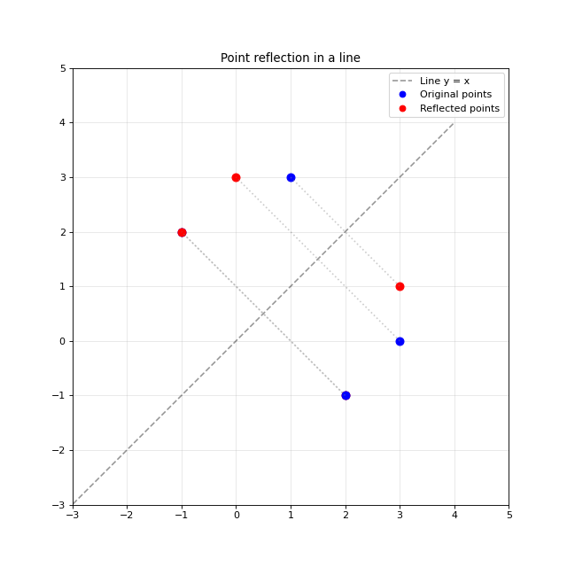
Circle → Circle
A circle not passing through the inversion center maps to another circle.
import matplotlib.pyplot as plt
import numpy as np
from cline import Cline
S = Cline.from_circle(center=0, radius=2)
C = Cline.from_circle(center=3, radius=1)
C_img = S.invert(C)
fig, ax = plt.subplots(figsize=(8, 8))
theta = np.linspace(0, 2*np.pi, 100)
# Inversion circle
ax.plot(S.radius*np.cos(theta), S.radius*np.sin(theta), 'k--', alpha=0.3, label='Inversion circle')
# Original
ax.plot(C.center.real + C.radius*np.cos(theta),
C.center.imag + C.radius*np.sin(theta), 'b', label='Original circle')
# Image
ax.plot(C_img.center.real + C_img.radius*np.cos(theta),
C_img.center.imag + C_img.radius*np.sin(theta), 'r', label='Image circle')
ax.set_aspect('equal')
ax.grid(True, alpha=0.3)
ax.legend()
ax.set_title('Circle → Circle (not through center)')
(Source code, png, hires.png, pdf)
{kind=link}
{kind=link}
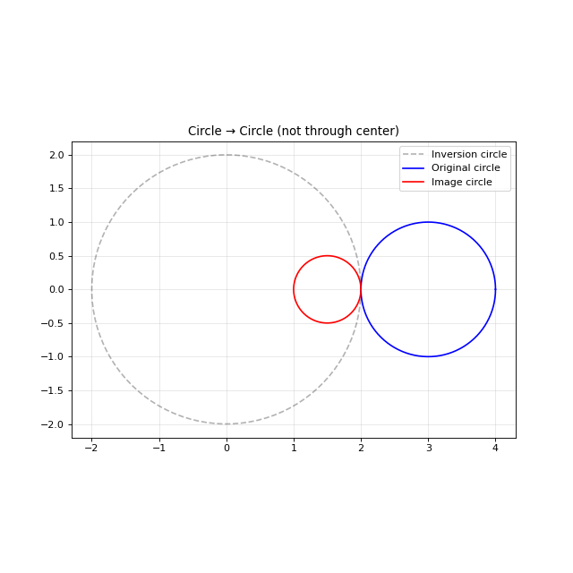
Circle → Line
A circle passing through the inversion center maps to a line.
import matplotlib.pyplot as plt
import numpy as np
from cline import Cline
S = Cline.from_circle(center=0, radius=1)
C = Cline.from_circle(center=1, radius=1) # passes through origin
C_img = S.invert(C)
fig, ax = plt.subplots(figsize=(8, 8))
theta = np.linspace(0, 2*np.pi, 100)
# Inversion circle
ax.plot(np.cos(theta), np.sin(theta), 'k--', alpha=0.3, label='Inversion circle')
# Original circle (through origin)
ax.plot(1 + np.cos(theta), np.sin(theta), 'b', label='Original circle (through 0)')
# Image line
x_line = np.full(100, 0.5)
y_line = np.linspace(-3, 3, 100)
ax.plot(x_line, y_line, 'r', label=f'Image line')
ax.set_xlim(-2, 3)
ax.set_ylim(-3, 3)
ax.set_aspect('equal')
ax.grid(True, alpha=0.3)
ax.legend()
ax.set_title('Circle → Line (circle through center)')
(Source code, png, hires.png, pdf)
{kind=link}
{kind=link}
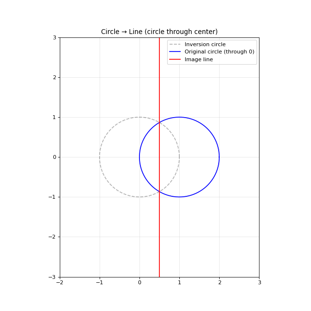
Line → Circle
A line not passing through the inversion center maps to a circle through the center.
import matplotlib.pyplot as plt
import numpy as np
from cline import Cline
S = Cline.from_circle(center=0, radius=1)
L = Cline(c=0, alpha=1+0j, d=-2) # vertical line x=1
L_img = S.invert(L)
fig, ax = plt.subplots(figsize=(8, 8))
theta = np.linspace(0, 2*np.pi, 100)
# Inversion circle
ax.plot(np.cos(theta), np.sin(theta), 'k--', alpha=0.3, label='Inversion circle')
# Original line x=1
ax.axvline(x=1, color='b', label='Original line x=1')
# Image circle (passes through origin)
ax.plot(L_img.center.real + L_img.radius*np.cos(theta),
L_img.center.imag + L_img.radius*np.sin(theta), 'r', label='Image circle')
ax.set_xlim(-1.5, 2.5)
ax.set_ylim(-1.5, 1.5)
ax.set_aspect('equal')
ax.grid(True, alpha=0.3)
ax.legend()
ax.set_title('Line → Circle (line not through center)')
(Source code, png, hires.png, pdf)
{kind=link}
{kind=link}
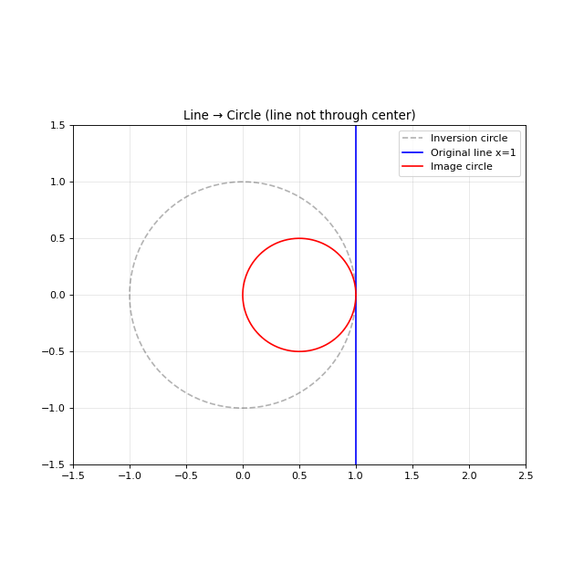
Line → Line
A line passing through the inversion center maps to a line.
import matplotlib.pyplot as plt
import numpy as np
from cline import Cline
S = Cline.from_circle(center=0, radius=1)
L = Cline.from_line(-1, 1) # real axis, through origin
L_img = S.invert(L)
fig, ax = plt.subplots(figsize=(8, 8))
theta = np.linspace(0, 2*np.pi, 100)
# Inversion circle
ax.plot(np.cos(theta), np.sin(theta), 'k--', alpha=0.3, label='Inversion circle')
# Original and image (both the real axis)
ax.axhline(y=0, color='b', linewidth=2, label='Line through center (fixed)')
ax.set_xlim(-2, 2)
ax.set_ylim(-2, 2)
ax.set_aspect('equal')
ax.grid(True, alpha=0.3)
ax.legend()
ax.set_title('Line → Line (line through center)')
(Source code, png, hires.png, pdf)
{kind=link}
{kind=link}
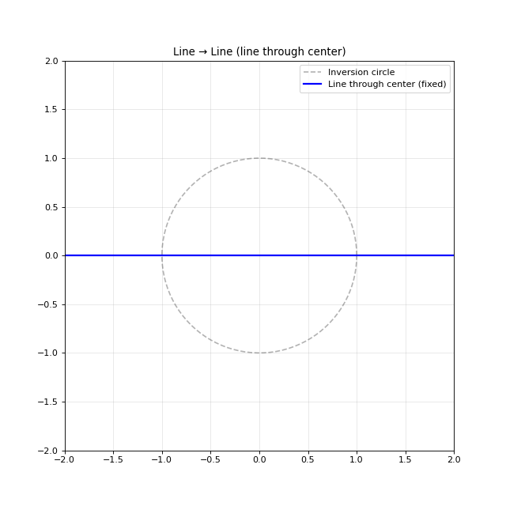
Intersection
Find the intersection points of two clines:
from cline import Cline
# Two intersecting circles
C1 = Cline.from_circle(center=0, radius=2)
C2 = Cline.from_circle(center=2, radius=2)
pts = C1.intersection(C2)
print(f"{len(pts)} intersection points")
for p in pts:
print(f" z = {p:.4f}")
# Circle and tangent line: 1 point
C = Cline.from_circle(center=0, radius=1)
L = Cline(c=0, alpha=1+0j, d=-2) # x=1
pts = C.intersection(L)
print(f"Tangent: {len(pts)} point at z = {pts[0]:.4f}")
# Two parallel lines: 0 points
L1 = Cline(c=0, alpha=1j, d=0)
L2 = Cline(c=0, alpha=1j, d=-2)
print(f"Parallel lines: {len(L1.intersection(L2))} points")
Angles and Orthogonality
Compute the angle between two clines, or test orthogonality directly:
from cline import Cline
import numpy as np
# Angle between two unit circles
C1 = Cline.from_circle(center=0, radius=1)
C2 = Cline.from_circle(center=1, radius=1)
theta = C1.angle(C2)
print(f"Angle: {np.degrees(theta):.1f}°") # 120°
# Orthogonality uses an algebraic criterion (no intersection needed)
S = Cline.from_circle(center=0, radius=1)
C = Cline.from_circle(center=2, radius=3**0.5)
print(f"Orthogonal: {S.is_orthogonal(C)}") # True
# Two perpendicular lines
L1 = Cline.from_line(0, 1) # real axis
L2 = Cline.from_line(0, 1j) # imaginary axis
print(f"Angle: {np.degrees(L1.angle(L2)):.1f}°") # 90°
Symbolic Mode
Pass sympy types to get exact arithmetic — no floating point:
Neat Examples
Inverting a Grid in the Unit Circle
The 14 lines of the grid \(x = k\) and \(y = k\) for \(k = -3, -2, \ldots, 3\) have simple cline equations:
Vertical line \(x = k\): \(c = 0,\; \alpha = 1,\; d = -2k\)
Horizontal line \(y = k\): \(c = 0,\; \alpha = i,\; d = 2k\)
Under inversion in the unit circle, lines through the origin (the axes) stay as lines, while the other 12 lines each become a circle passing through the origin.
import matplotlib.pyplot as plt
import numpy as np
from cline import Cline
S = Cline.from_circle(center=0, radius=1)
theta = np.linspace(0, 2*np.pi, 300)
ks = [-3, -2, -1, 0, 1, 2, 3]
fig, (ax1, ax2) = plt.subplots(1, 2, figsize=(16, 8))
# -- Left: original grid + unit circle --
ax1.plot(np.cos(theta), np.sin(theta), 'k', linewidth=2)
for k in ks:
lw = 2 if k == 0 else 1
ax1.axvline(x=k, color='steelblue', linewidth=lw, alpha=0.7)
ax1.axhline(y=k, color='indianred', linewidth=lw, alpha=0.7)
ax1.set_xlim(-4, 4)
ax1.set_ylim(-4, 4)
ax1.set_aspect('equal')
ax1.grid(False)
ax1.set_title('Grid of 14 lines + unit circle')
ax1.set_xlabel('Re(z)')
ax1.set_ylabel('Im(z)')
# -- Right: images under inversion --
ax2.plot(np.cos(theta), np.sin(theta), 'k', linewidth=2)
for k in ks:
# Vertical x=k: c=0, alpha=1, d=-2k
Lv = Cline(c=0, alpha=1+0j, d=-2*k)
Lv_img = S.invert(Lv)
# Horizontal y=k: c=0, alpha=1j, d=2k
Lh = Cline(c=0, alpha=1j, d=2*k)
Lh_img = S.invert(Lh)
for img, color in [(Lv_img, 'steelblue'), (Lh_img, 'indianred')]:
if img.is_line:
p = img.point_on_line
d_vec = img.direction_vector
t = np.linspace(-2, 2, 300)
zs = p + t * d_vec
ax2.plot(np.real(zs), np.imag(zs), color=color, linewidth=1.5)
elif img.is_circle:
cx, cy = img.center.real, img.center.imag
r = img.radius
ax2.plot(cx + r*np.cos(theta), cy + r*np.sin(theta),
color=color, linewidth=1)
ax2.set_xlim(-1.5, 1.5)
ax2.set_ylim(-1.5, 1.5)
ax2.set_aspect('equal')
ax2.grid(False)
ax2.set_title('Images under inversion in unit circle')
ax2.set_xlabel('Re(z)')
ax2.set_ylabel('Im(z)')
fig.tight_layout()
(Source code, png, hires.png, pdf)
{kind=link}
{kind=link}
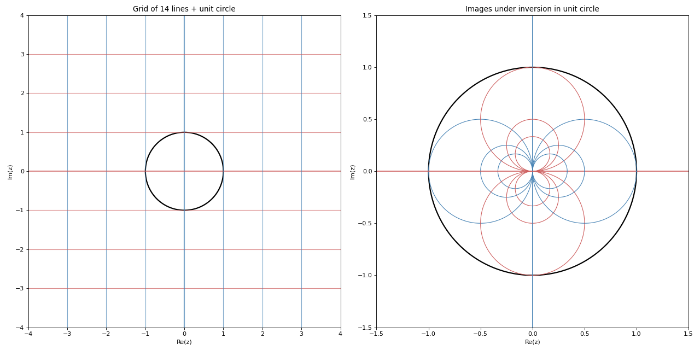
Apollonius’ Theorem via Cline Inversion
Theorem. Given three mutually tangent circles, there exist exactly two circles tangent to all three.
Proof by inversion. Pick a tangent point P of two of the three circles. Translate so that P is at the origin. Now invert in the unit circle:
The two circles through the origin become parallel lines.
The third circle (not through the origin) becomes a circle tangent to both lines.
In this configuration, finding two circles tangent to two parallel lines and a circle between them is trivial — they sit above and below.
Invert back and translate to recover the solution in the original picture.
import matplotlib.pyplot as plt
import numpy as np
from cline import Cline
theta = np.linspace(0, 2*np.pi, 300)
# Three mutually tangent circles with different radii
r1, r2, r3 = 1.0, 1.5, 0.8
c1 = 0 + 0j
c2 = (r1 + r2) + 0j
x3 = ((r1+r3)**2 - (r2+r3)**2 + (r1+r2)**2) / (2*(r1+r2))
y3 = np.sqrt((r1+r3)**2 - x3**2)
c3 = x3 + 1j*y3
# Tangent point P between C1 and C2
P = r1 * (c2 - c1) / abs(c2 - c1)
# Translate P to origin
c1t, c2t, c3t = c1 - P, c2 - P, c3 - P
# Invert in unit circle
S = Cline.from_circle(center=0, radius=1)
C1i = S.invert(Cline.from_circle(center=c1t, radius=r1))
C2i = S.invert(Cline.from_circle(center=c2t, radius=r2))
C3i = S.invert(Cline.from_circle(center=c3t, radius=r3))
# Line positions
x_l1 = -C1i.d / (2*np.real(C1i.alpha))
x_l2 = -C2i.d / (2*np.real(C2i.alpha))
# Solution circles in inverted picture
mid_x = (x_l1 + x_l2) / 2
r_sol = abs(x_l2 - x_l1) / 2
cx3i, cy3i, r3i = C3i.center.real, C3i.center.imag, C3i.radius
dx = mid_x - cx3i
dy = np.sqrt(max(0, (r_sol + r3i)**2 - dx**2))
A1i = Cline.from_circle(center=complex(mid_x, cy3i + dy), radius=r_sol)
A2i = Cline.from_circle(center=complex(mid_x, cy3i - dy), radius=r_sol)
# Invert back and translate
A1t = S.invert(A1i)
A2t = S.invert(A2i)
A1_c, A1_r = A1t.center + P, A1t.radius
A2_c, A2_r = A2t.center + P, A2t.radius
# --- 4-panel proof ---
fig, axes = plt.subplots(1, 4, figsize=(24, 6.5))
def dc(ax, c, r, co='steelblue', lw=1.5, lb=None):
ax.plot(np.real(c)+r*np.cos(theta), np.imag(c)+r*np.sin(theta),
color=co, linewidth=lw, label=lb)
# Step 1: original
ax = axes[0]
dc(ax, c1, r1, 'steelblue', lb='$A\\ (r=1)$')
dc(ax, c2, r2, 'teal', lb='$B\\ (r=1.5)$')
dc(ax, c3, r3, 'mediumpurple', lb='$C\\ (r=0.8)$')
ax.plot(P.real, P.imag, 'ko', ms=6)
ax.text(P.real+0.08, P.imag-0.18, '$P$', fontsize=11)
ax.set_aspect('equal'); ax.grid(True, alpha=0.2)
ax.set_xlim(-1.5, 4.5); ax.set_ylim(-1.5, 3)
ax.set_title('Step 1: Three tangent circles', fontweight='bold')
ax.legend(fontsize=8)
# Step 2: translated + inverted
ax = axes[1]
ax.axvline(x=x_l1, color='steelblue', lw=1.5, label="$A'$")
ax.axvline(x=x_l2, color='teal', lw=1.5, label="$B'$")
dc(ax, C3i.center, C3i.radius, 'mediumpurple', lb="$C'$")
ax.set_aspect('equal'); ax.grid(True, alpha=0.2)
ax.set_xlim(-1.5, 1.5); ax.set_ylim(-1.2, 2.2)
ax.set_title('Step 2: Translate + invert', fontweight='bold')
ax.legend(fontsize=9, loc='lower right')
# Step 3: add solution circles
ax = axes[2]
ax.axvline(x=x_l1, color='steelblue', lw=1.5)
ax.axvline(x=x_l2, color='teal', lw=1.5)
dc(ax, C3i.center, C3i.radius, 'mediumpurple')
dc(ax, A1i.center, A1i.radius, 'crimson', 2.5, 'Solution 1')
dc(ax, A2i.center, A2i.radius, 'orangered', 2.5, 'Solution 2')
ax.set_aspect('equal'); ax.grid(True, alpha=0.2)
ax.set_xlim(-1.5, 1.5); ax.set_ylim(-1.2, 2.2)
ax.set_title('Step 3: Find tangent circles', fontweight='bold')
ax.legend(fontsize=9, loc='lower right')
# Step 4: invert back + translate
ax = axes[3]
dc(ax, c1, r1, 'steelblue', lw=1)
dc(ax, c2, r2, 'teal', lw=1)
dc(ax, c3, r3, 'mediumpurple', lw=1)
dc(ax, A1_c, A1_r, 'crimson', 2.5, 'Solution 1')
dc(ax, A2_c, A2_r, 'orangered', 2.5, 'Solution 2')
ax.set_aspect('equal'); ax.grid(True, alpha=0.2)
ax.set_xlim(-2, 5); ax.set_ylim(-3, 3)
ax.set_title('Step 4: Invert back + translate', fontweight='bold')
ax.legend(fontsize=9)
fig.suptitle("Apollonius' Theorem: visual proof via cline inversion",
fontsize=14, fontweight='bold', y=1.02)
fig.tight_layout()
(Source code, png, hires.png, pdf)
{kind=link}
{kind=link}
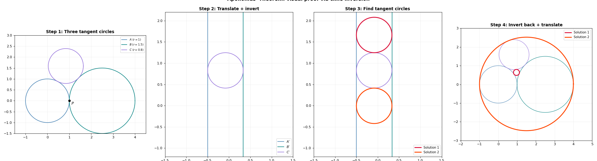